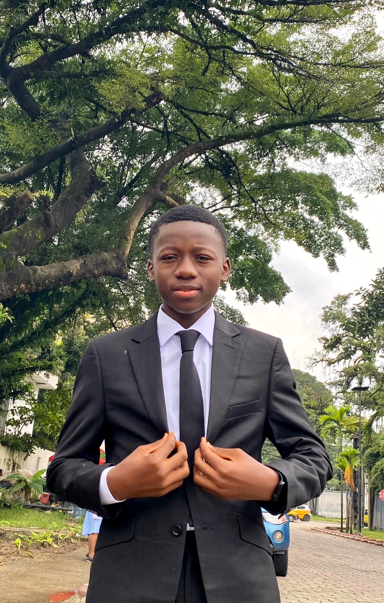

Qui suis-je ? Je suis NGUE HAMILTON FRESHNEL
Mon profil & Parcours académique
Titulaire d'un baccalauréat C et actuellement en formation de Bachelor / Licence en Génie Logiciel, je combine rigueur analytique, compétences en modélisation (UML / Merise) et maîtrise des technologies web et d'entreprise modernes.
Ce qui me passionne
Concevoir des architectures logicielles découplées et sécurisées (Spring Boot, Angular, Laravel), résoudre des problématiques métiers concrètes, optimiser la gestion de données et bâtir des interfaces intuitives et réactives.
Mes ambitions professionnelles
Évoluer en tant qu'Ingénieur Logiciel Fullstack / DevOps, piloter la conception de systèmes complexes, contribuer à l'écosystème open-source et approfondir les architectures cloud et microservices.

Expériences & Stages
Encadré par M. Frédéric Chendjou (Chef de Service Technique) et M. Timothée Fredy Ngouma (Encadreur Académique).
- Projet central : Conception et réalisation d'une application web Helpdesk et GMAO de gestion des tickets de maintenance pour le suivi du parc matériel (onduleurs haute puissance 6kVA-20kVA, serveurs, PC, imprimantes).
- Développement Fullstack : Architecture découplée Angular + Spring Boot (Java) + MySQL avec sécurisation JWT, DTOs et endpoints REST.
- Fonctionnalités clés : Voyant d'urgence dynamique sur le dashboard technique, notifications instantanées, panneau latéral interactif (Side Drawer), upload de photos de panne et import par lots (Batch Excel).
- Méthodologie & Conception : Modélisation rigoureuse en UML (Cas d'utilisation, Activité 4 couloirs, Séquence, Classes) et pilotage en Agile SCRUM par sprints de 2 semaines.
Développement d'une solution de gestion des stocks pharmaceutiques et cartographie avec Angular et Laravel. Implémentation du contrôle d'accès multi-rôles (RBAC), journalisation complète des logs d'audit et alertes de stock.
Conception ergonomique et intégration d'une application mobile pour le suivi des notes, relevés académiques et présences (PHP/MySQL + Node.js).